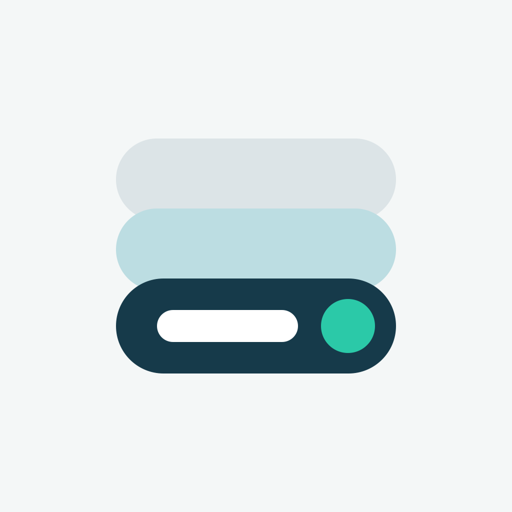
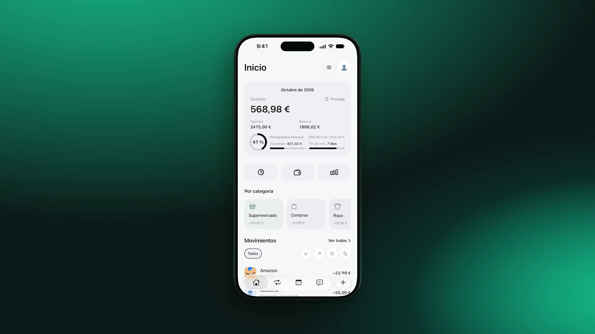
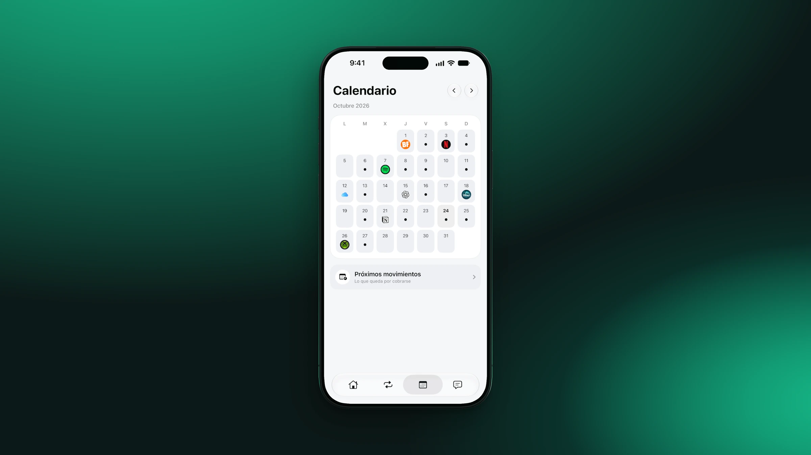
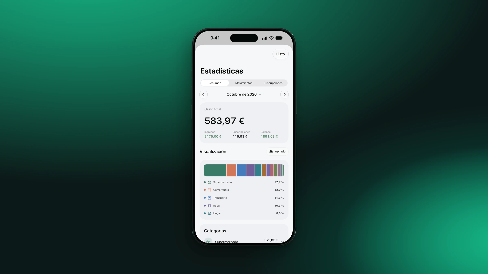
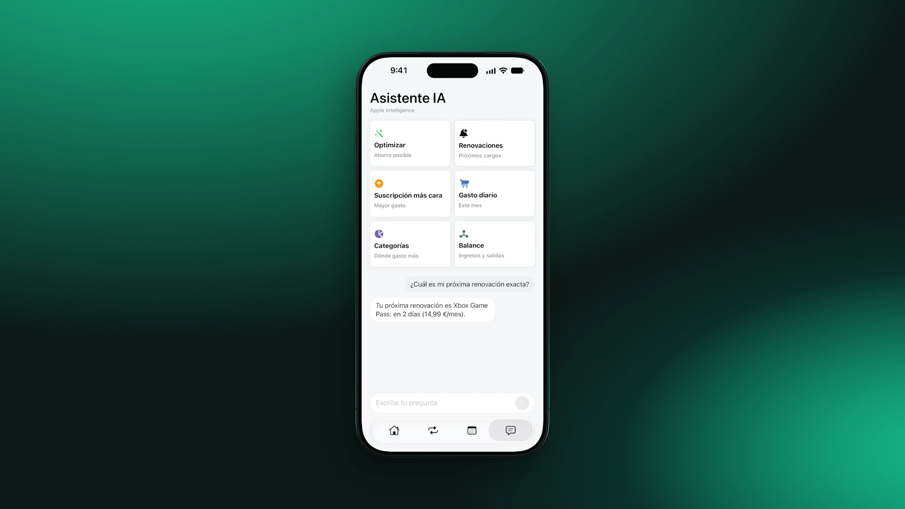
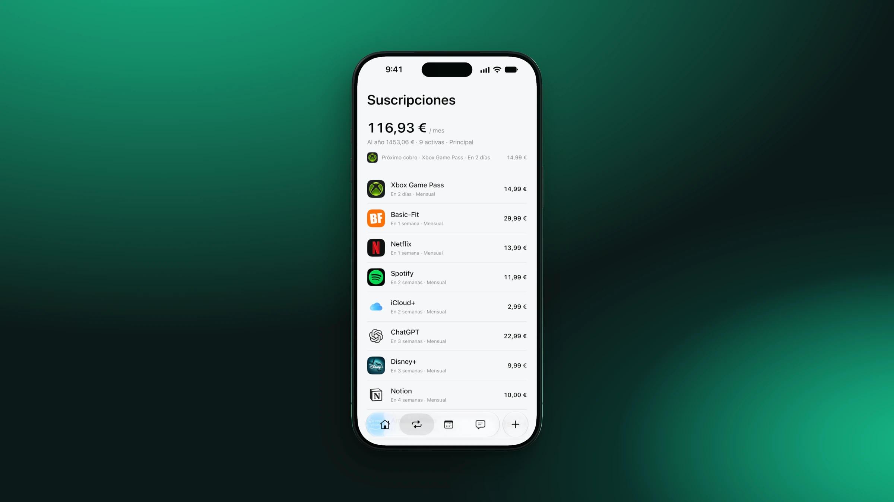

01 / Overview
Your month, in perspective.
Expenses, income, balance and monthly budget in one view. Understand where your money goes, with a breakdown by category.
Monthly budget
Income & expenses

Trackle ↗Expenses, income, budgets and subscriptions. A clearer picture of your everyday finances.
Made for iPhone, iPhone Duo & iPad

Trackle Your money, in perspective. iPhoneThe idea
Everyday expenses and recurring payments tell the same story. Trackle brings them together with your income and budget, so you can see the whole month.
01 / Overview
Expenses, income, balance and monthly budget in one view. Understand where your money goes, with a breakdown by category.
02 / Calendar
Explore your finances on the calendar. See your movements and upcoming renewals in context.

03 / Statistics
Compare periods and explore the categories behind your expenses. A visual way to understand your habits.

04 / Assistant
Ask about your expenses and explore an analysis of your finances from the app’s assistant.

05 / Subscriptions
Bring subscriptions, amounts and renewal dates together. A clear view of what you pay, and when.

Privacy, by design
Trackle never asks for your bank credentials. You choose what to add, edit or remove. Your information stays within the Apple ecosystem, and iCloud can keep it available on your devices.
Read the privacy policy ↗Good to know
No. You add the subscriptions and recurring expenses you want to track, so Trackle never needs your bank credentials.
Yes. Trackle includes layouts for iPhone, iPhone Duo and iPad, with room for more detail on larger screens.
No. You can also organize recurring personal expenses such as rent, insurance, utilities or memberships.
No. Trackle helps you see what renews and when. A cancellation is still completed directly with the service provider.